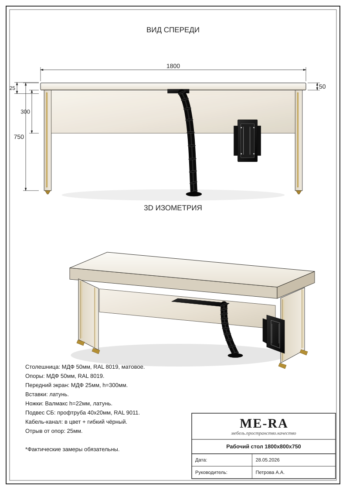
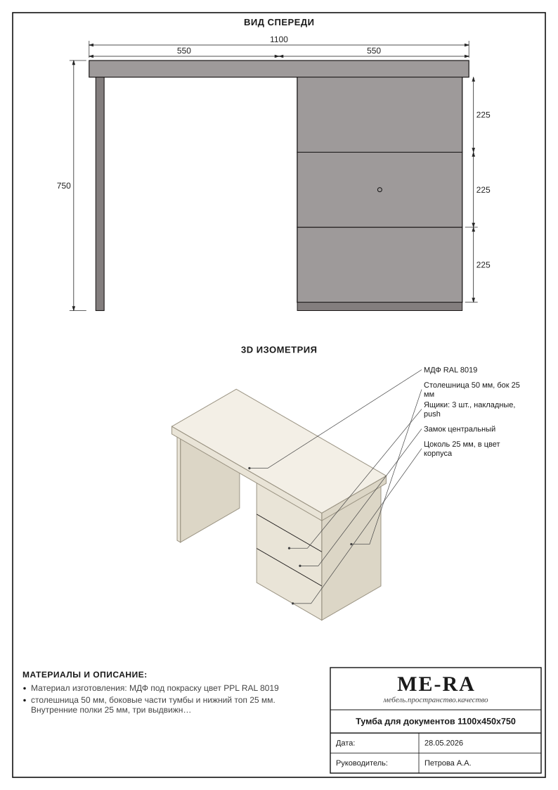
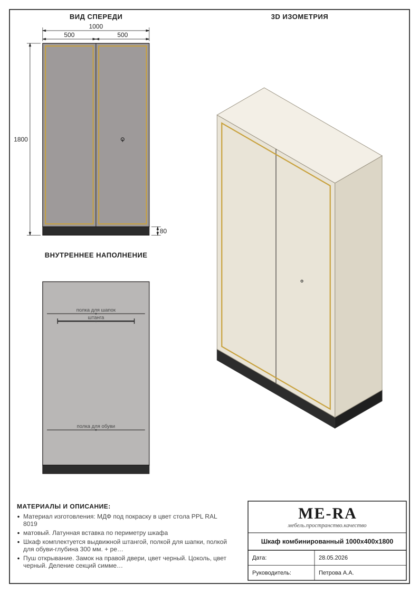
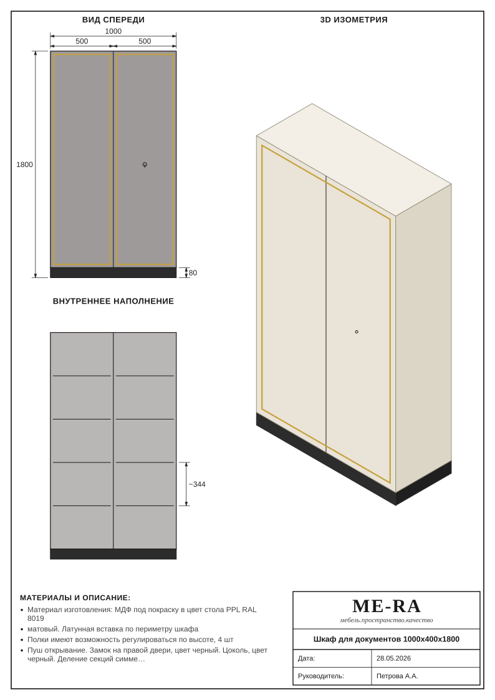
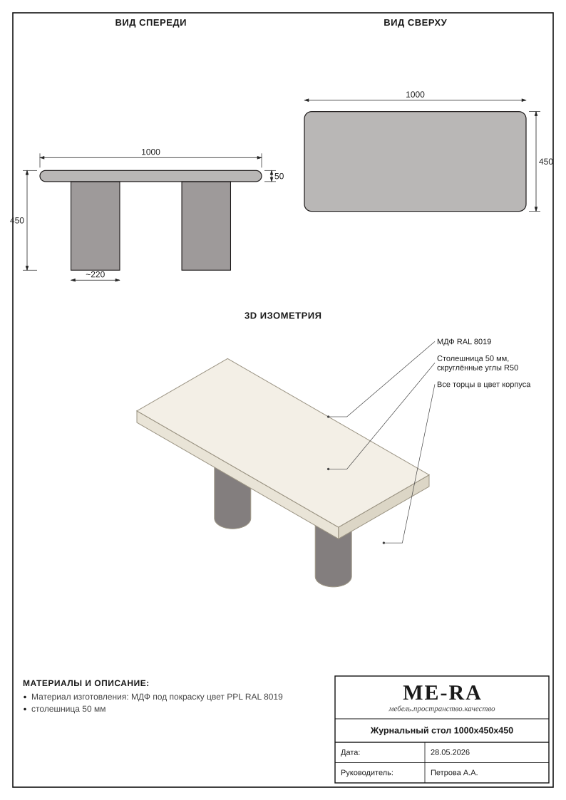
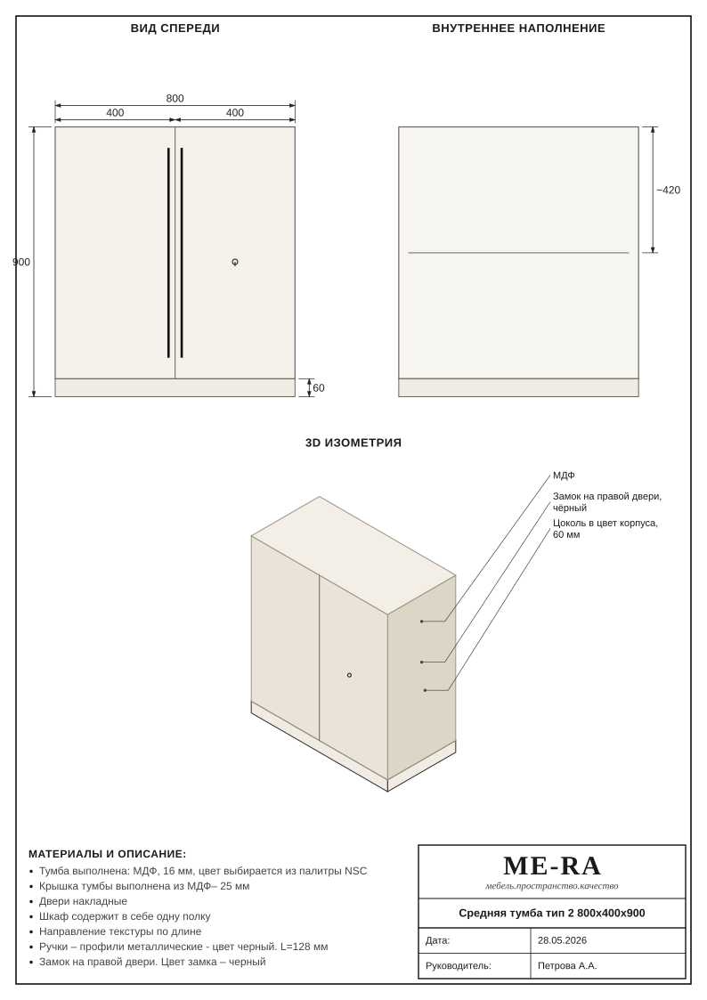
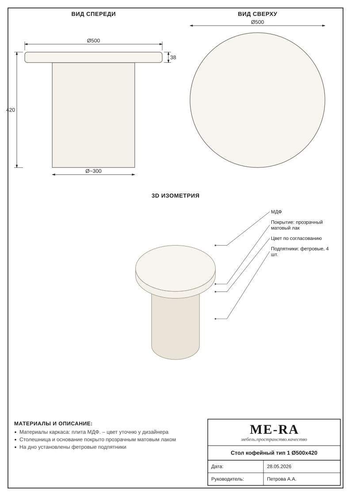
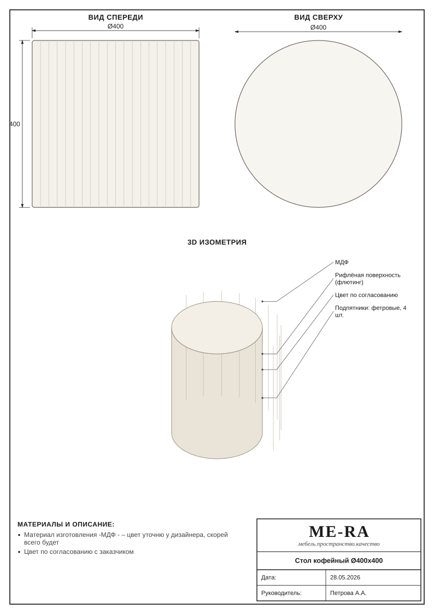

08_stol_rabochiy_v_kabinete.svg
07_tumba_dlya_dokumentov.svg
06_shkaf_kombinirovannyy.svg
05_shkaf_dlya_dokumentov.svg
05_zhurnalnyy_stol.svg
06_srednyaya_tumba_tip_2.svg
07_stol_kofeynyy_tip_1.svg
08_stol_kofeynyy.svg